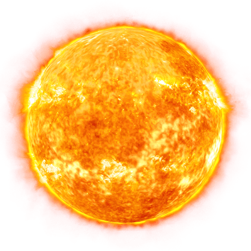
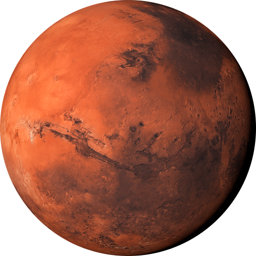
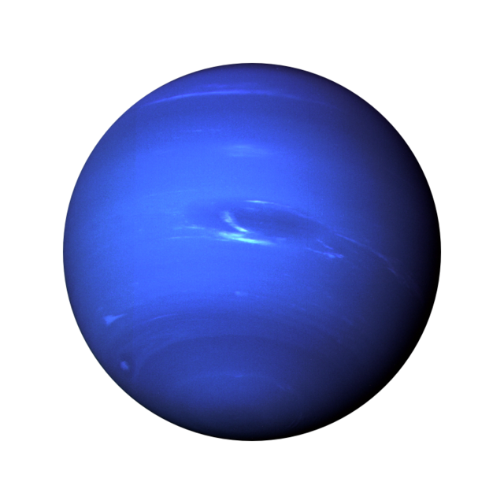

The Sun
The Sun is a nearly perfect sphere of hot plasma and the most important source of energy for life on Earth...
Mercury

Mercury has a very thin atmosphere and experiences extreme temperatures due to its proximity to the Sun...
Venus

Venus is often called Earth's sister planet because of their similar size and composition...
Earth

Earth is a unique haven in the solar system with its diverse climate and abundant water...
Mars
Mars is home to the tallest volcano and the deepest, longest canyon in the solar system...
Jupiter

Jupiter has a massive magnetic field and over 79 moons, including Ganymede, the largest moon in the solar system...
Saturn

Saturn is the second-largest planet and has over 80 moons, with Titan being the most notable...
Uranus

Uranus is an ice giant with a cold atmosphere and faint rings, and it has 27 known moons...
Neptune
Neptune is a cold, windy ice giant with 14 known moons, including Triton...